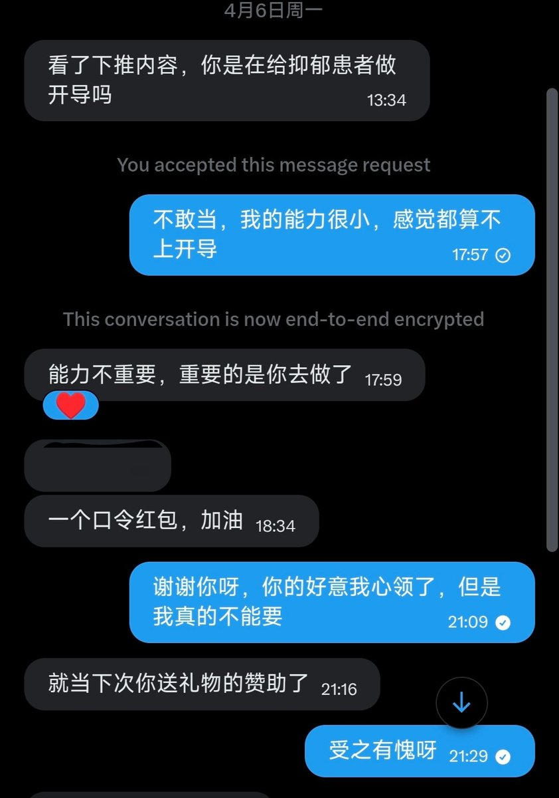

我有时会看到一些想要钱，想要很多很多钱的帖子，钱确实是好东西，可以买到很多东西，可以解决很多问题，但是我好像对金钱对物质没有什么追求。并不是想说我品德高尚，视金钱如粪土。我也不是什么有钱人，从小家里就很穷，没体验过什么好生活。仔细想想，小时候也曾想过能在地上捡到很多钱这种不劳而获的事情，现在真的有人要给我钱我反而不想要了。也曾想过长大以后有钱了可以给自己买很多好吃的，买很多衣服，可以到处走走看看。直到工作以后反而对这些没有什么感觉了，我好像对什么都是淡淡的，无论是物质上的还是感情上的。


我想写点什么，不然感觉大脑会生锈。这是发生在两个半月之前的事情，那时的我工作内容还算轻松，所以还有精力去做这些事情。当时他关注了我找我私聊，想给我发个红包。这是第一次在这里有人想给我钱，我能理解他为什么这么做。我看到他也会给其他缺钱的过得不好的人转钱，他是一个好心人，但是我不能收 https://t.co/msOeG3BVXi